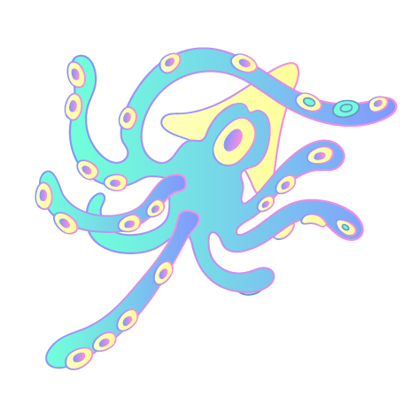
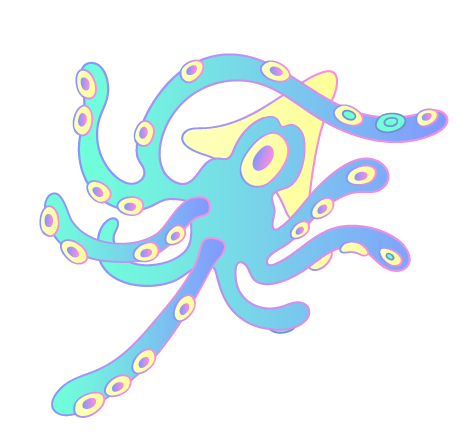

關於何謂火星意識體,研究員透過生物學和哲學的角度,對於意識進行特性上的分析。從生物多樣性的角度來看,每種生物具有不同的感知器官,而這些感知器官將以不同的方式處理周圍環境的訊息,進而形塑每個個體獨有的思考模式,而模式各異的思考,也應促使意識如生物一樣,以多樣的型態存在。
另外,生命的形成是當一個環境滿足宜居條件時所具備的產物,故生命的狀態與其居住環境的狀態有著密不可分的關係,若生命的狀態會影響其承載的意識,那麼不同的環境也將形塑出不同的意識;當把環境的規模擴大到一個行星時,那這個行星也應當保有形塑其上意識的印記(imprint),像是行星的環境狀態、公轉與自轉的速度、月亮的存在與否等因素都將影響生命的演化,進而影響意識的狀態,故火星上的意識應當與地球的意識有所不同。
然而從哲學的角度來看,依據泛心論(Panpsychism)所提出的觀點-「意識是存在物質的最基本特徵」,即便是一個細小的粒子也都具有一種極其簡單的意識型態,因此山脈、石頭和灰塵可能也都具有意識,而我們人類的意識也僅是眾多微小意識的集合體。
若是以泛心論的觀點回看火星,或許其上的岩石、紅土和沙塵也都具有意識,再加上組成地球人類的粒子與組成火星物質的粒子具有部分相同的元素,因此或許我們的意識與火星上的意識具有某種層度上的共通性。
綜合生物學與哲學對於意識的觀點,研究員發現人類意識與火星意識之間異中存同的特點,故本實驗室對於火星意識體的基礎定義為「人類在觀想火星生命時所投射的內在意識」。
As for what a Martian consciousness entails, researchers analyzed the characteristics of consciousness from the perspectives of biology and philosophy. From the biodiversity perspective, each creature has different sense organs. Those sense organs use different methods to process information from the surrounding environment, shaping the unique thought patterns of individuals. These different thought patterns, in turn, should lead to the existence of diverse types of consciousness, as they do in the lower animals.
In addition, the development of life is the outcome of an environment having conditions suitable for lives. Thus, the state of life is closely related to its living environment. If the state of life affects the consciousness it carries, then different environments will bear different types of consciousnesses. When the scope of an environment is expanded to the scale of a planet, then the planet should also bear the imprints of the consciousnesses that shaped it, such as its environment, its revolution and rotation periods, and the presence or absence of satellites. These imprints affect the evolution of life and subsequently affect the states of consciousness. Thus, the consciousnesses of Mars should be different from those of Earth.
From the philosophical perspective, according to the perspective of panpsychism, consciousness is the most basic characteristic of extant matter. That is, even small particles have extremely simple forms of consciousness, and mountains, stones, and dust may all have consciousness. Human consciousness is only the aggregate of a multitude of minute forms of consciousness.
When the perspective of panpsychism is adopted to view Mars, the rocks, red dirt, and dust on its surface may all have consciousness. Given the idea that the compositions of the particles that form Earth and humans are very close to those forming substances on Mars, perhaps human consciousness and that of Mars share commonalities at a certain level.
Summarizing the viewpoints of biology and philosophy on consciousness, researchers in this lab discovered that the consciousnesses of humans and Mars do indeed share commonalities. Thus, this lab has provided a basic definition of a Martian consciousness: “The inner consciousness projected by humans when they visualize life on Mars.”


 
